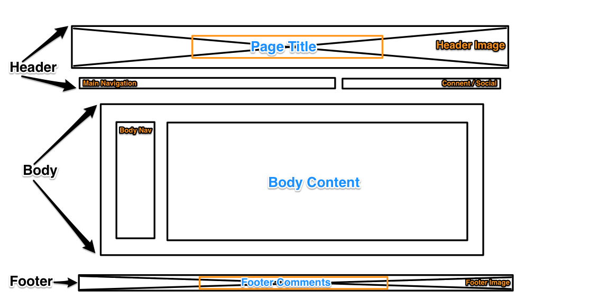

Index Makeover
May 4, 2014
This week we are working to makeover our index.html page or rather our homepage for the site we are building. There are a few things I want to consider as I proceed with this challenge. First, I plan on cleaning or streaming lining the overall look of the site. Previously, I felt it was a bit busy. Second, I want to make a clearer presentation of navigation choices. I think to achieve this, I'll break the menu into two section, one for general navigation and social media then another section for blog posts and projects.
In order to complete this challenge, I'll be working in steps. I need to establish a wireframe or blue print for how I would like the site to look.

Then I'll have to jump into the actual coding of the HTML and CSS files. Finally, I'll commit and sync all my changes through Github which is hosting my site.